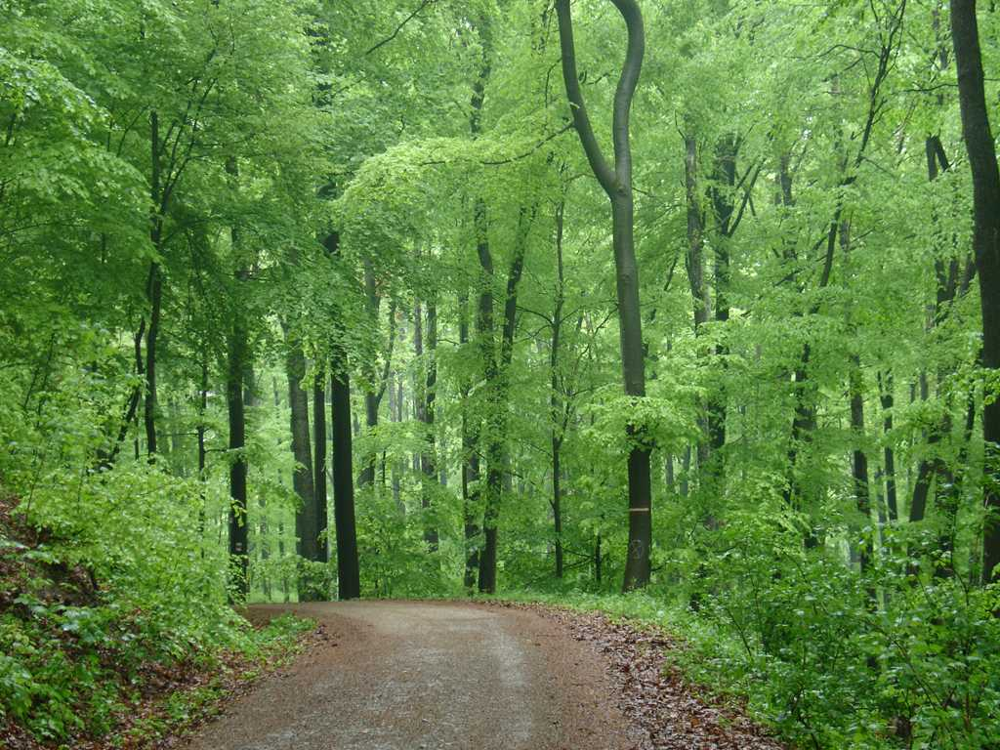
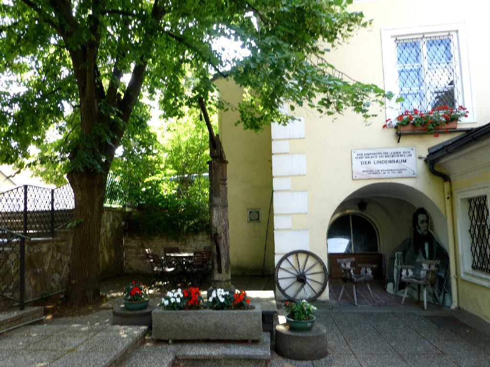
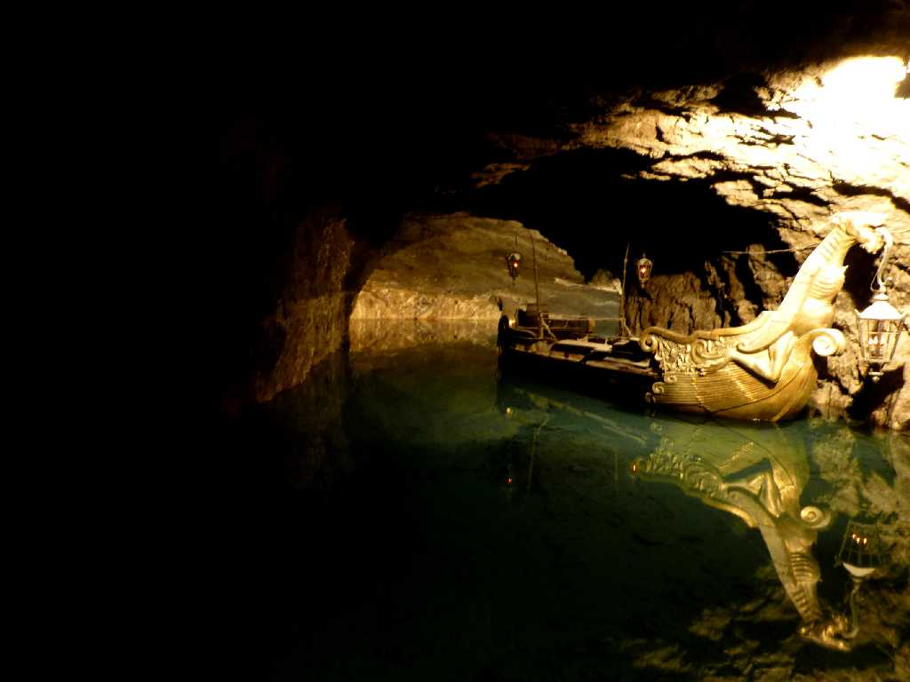
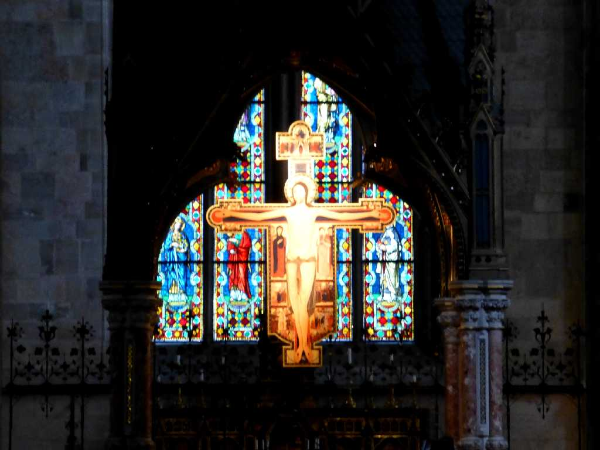
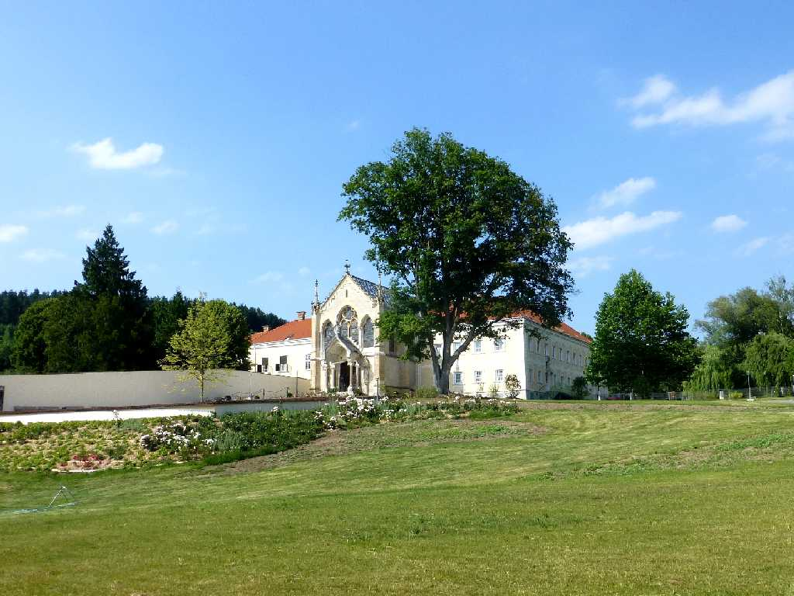
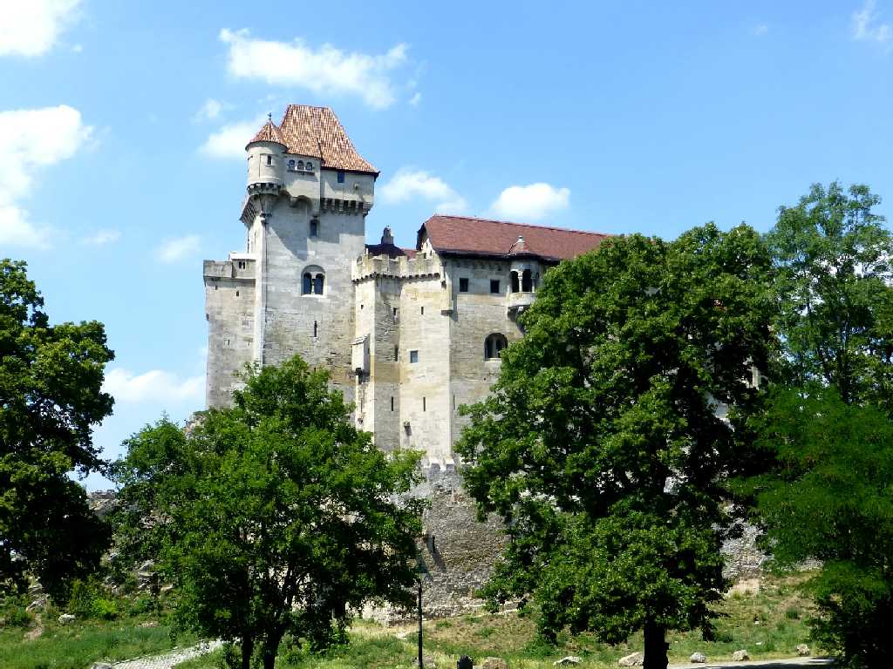

Wienerwald
ウィーンの森はアルプス山系の東端に広がる約１,０００ｋ㎡におよぶ森林地帯でシュトラウスがウィーンの森の物語を作曲して世界的に知られるようになった



Schubertstätte Wienerwald
ウィーンの森にあるシューベルトが住んでいた家と菩提樹の庭

Port Seegrotte
ウィーンの森にあるヨーロッパ最大の地底湖ゼーグロッテ

Stift Heiligenkreuz Wienerwald
ハイリゲンクロイツ修道院にはキリストが磔刑になった十字架の一部がある

Jagdschloß Mayerling Wienerwald
マイヤーリンク事件でルドルフ皇太子が謎の死を遂げた部屋がある狩猟館

Burg Liechtenstein Wienerwald
１１３６年にリヒテンシュタイン王子によりウィーンの森の岩の尾根に創られたお城